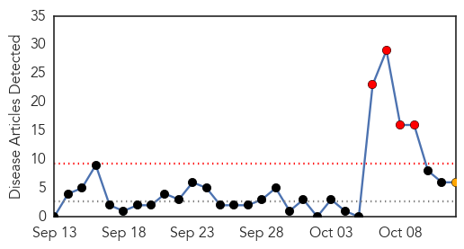
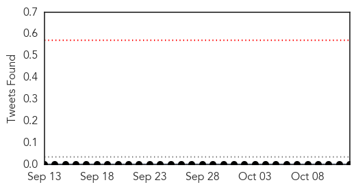

Hepatitis
30-Day Web Trend
4 alerts, 1 warnings

30-Day Twitter Trend
0 alerts, 0 warnings

Article Locations

Article Confidences

Top Articles:
- 0.885
- SGH admits fault
- 0.843
- Hepatitis: SGH offers emotional support for patients, families, Health News & Top Stories
- 0.831
- SGH offers emotional support for patients, families, AsiaOne Singapore News
- 0.795
- SingHealth chief tells staff to 'keep strong', stresses mission of care, Health News & Top Stories
- 0.579
- How accountable is your doctor?
- 0.562
- Hundreds of Chinese children sickened after out-of-date vaccine: Parents
Top Tweets:
-
No tweets found for Oct 12, 2015
Dengue Fever
30-Day Web Trend
12 alerts, 15 warnings

30-Day Twitter Trend
0 alerts, 0 warnings

Article Locations

Article Confidences

Top Articles:
- 0.997
- Dengue virus ′endemic′ in China, say researchers
- 0.996
- Dengue cases in Delhi breach 10,000 mark, 30 deaths confirmed
- 0.994
- Swineflu case surfaces in Ludhiana, puts authorities into tizzy
- 0.994
- Comprehensive genomic study provides evidence that dengue has become endemic and diverse in China
- 0.993
- Neglected tropical diseases taking hold in U.S.
- 0.990
- Comprehensive genomic study provides evidence that dengue has become endemic and diverse in China
- 0.989
- DOH: Dengue cases rise four times this year - Philippines
- 0.989
- DOH: Dengue cases rise four times this year
- 0.988
- Panic in Kotwa as dengue scare continues unabated
- 0.986
- 3,077 fresh dengue cases in last 1 week; total crosses 10,000 mark
- 0.985
- Panic in Kotwa as dengue scare continues unabated
- 0.960
- Multan expects decline in dengue cases
- 0.895
- Dengue treatment costs a bomb
- 0.796
- Why Your Dog Can Get Vaccinated Against Lyme Disease And You Can’t
- 0.674
- Plan to honeytrap dengue mosquitoes
- 0.666
- 30 diseases that Columbus introduced to the Americas
- 0.659
- Doctors plan global day of climate action « nuclear-news
- 0.572
- City residents vulnerable to threat of dengue
- 0.563
- 30 terrible diseases Christopher Columbus brought to the New World
Top Tweets:
-
No tweets found for Oct 12, 2015